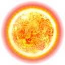
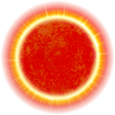
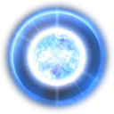
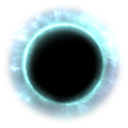

Cette section ne sera pas mise a jour avant la sortie de l'update Dark Néblua

Orion
Les modules de Commerce, vont venir s’équiper sur vos Vaisseaux de Transport (Transport Ship), et comme leurs noms l’indique, vont vous servir principalement à augmenter les revenus issus de vos Cargaisons. Ils servent également au transport de ressources plus avancés, ou en plus grande quantité.
Le Forage peut paraître inintéressant au premier abord, mais il est en réalité essentiel. C’est grâce aux modules de Forage, que vous allez récupérer de l’hydrogène, ressource nécessaire au déplacement des vos vaisseaux, a l’activation de certaines stations, et pour l’utilisation de vos modules. Il existe une bonne variété de modules de Forage pour vous aider dans cette tâche, chacun avec un fonctionnement bien précis.

Les modules de Soutient, proposent un panel d’actions très vaste, vous permettant de construire votre propre façon de jouer, en fonction de vos préférences et de vos goûts. Ils sont indispensable dans la plupart des cas, et seront souvent votre plus gros casse-tête en ce qui concerne le choix de vos équipements.

Les étoiles jaunes, sont le point de départ de tout joueur. Il s'agit de votre base, chacun possède la sienne, et ne pourra y être attaquer par d'autres joueurs. On y trouve des points de passages pour les autres étoiles, des planètes a améliorer, des cargaisons a distribuer, et parfois des cerbères a éliminer
Les étoiles rouge sont le principal mode de jeu de Hadès Star. Il s'agit de match PvE d'une 15aine de minutes, dans lesquels le but est de récupérer les artéfacts contenu dans les planètes et défendu par des forces cerbères de plus en plus puissantes
Les étoiles bleues sont un mode de jeu rapide et dynamique de 5 minutes, en mode battle royale. Le but est donc d'être le dernier en vie, et ainsi récupérer une récompense de crédits et d'hydrogène.
Les étoiles blanche sont un mode de jeu en PvP, ou deux corporations s'affrontent pour le contrôle de reliques. Le combat dure 5j au total, et fait appel a des stratégies de plus en plus retord afin de parvenir a ses fins.
